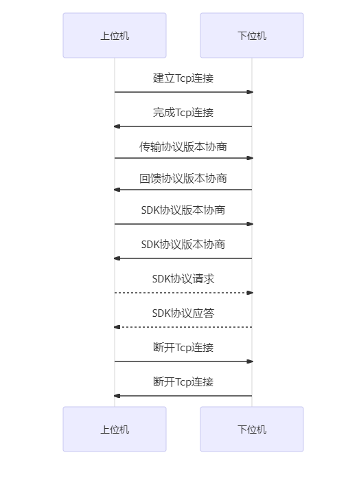

SDK协议流程
注: SDK协议通信不能和发送文件数据交叉发送
比如发送文件时, 必须等文件发送完, 在最后接收到发送文件结束确认后才能继续下发SDK信息
如果在发送文件中突然插入一条SDK信息, 则该连接将被置位非法操作连接, SDK协商将被取消, 可断开连接重新进行SDK协商.
先建立Tcp连接
进行协议版本交互
进行SDK信息交互, 当一段时间未进行SDK信息交互需互发心跳包维持连接
不再进行SDK交互后关闭Tcp连接

版本协商
- 上位机发送版本协商包, 版本号为 LOCAL_TCP_VERSION
- 下位机收到版本协商包后, 提取版本号,
- 如版本号小于下位机支持的最低版本号, 返回 传输协议版本过低的错误信息
- 如版本号大于下位机支持的最高版本号, 返回下位机最高版本号, 上位机设置下位机返回的最高版本号
- 如版本号在下位机支持列表, 则下位机自动切换到相同传输协议, 并返回相同的版本号
- 收到 传输版本过低 的错误信息因做断开连接处理
协议版本请求
| 字段 | 命令包长度(Len) | 命令(Cmd) | 版本号(Version) |
|---|---|---|---|
| 字节数 | 2字节 | 2字节 | 4字节 |
| 取值 | 8 | kSDKServiceAsk | LOCAL_TCP_VERSION |
协议版本反馈
| 字段 | 命令包长度(Len) | 命令(Cmd) | 版本号(Version) |
|---|---|---|---|
| 字节数 | 2字节 | 2字节 | 4字节 |
| 取值 | 8 | kSDKServiceAnswer | 反馈值 |
SDK版本协商
SDK协议版本协商通过 GetIFVersion SDK获取guid值, 此连接后续SDK通讯都需要使用该guid值来完成SDK请求
在SDK协议交互前, 需要获取guid值, 这个值在后续SDK交互中, 需要在xml的sdk标签的guid填入.
注意: SDK版本协商走的是SDK协议交互, SDK协议包头都是一样的, 如下面SDK请求的格式.
SDK协议交互
SDK数据包协议依赖 协议数据包 结构, 每包最大长度都不能找过协议数据包要求
SDK请求
| 字段 | 命令包长度(Len) | 命令(Cmd) | 总长度 | 索引 | SDK接口数据 |
|---|---|---|---|---|---|
| 字节数 | 2字节 | 2字节 | 4字节 | 4字节 | N字节 |
| 取值 | Len | kSDKCmdAsk | Total | index | XmlData |
Len值: Len = 2 + 2 + 4 + 4 + N;
Total值为SDK接口数据的总长度
Index值为当前包SDK接口数据的索引, 比如数据大于协议数据包时需要分包, 第一包是0, 第二包就是xml数据 + 已发的xml数据的偏移位置. 如发送200字节Xml, 分100字节1包, 那么第一包的Index = 0, 第二包的Index = 100;
XmlData值为SDK接口数据, 最大长度要求和协议包长度, XmlMaxLength = 9 * 1024 - 2 - 2 - 4 - 4个字节, 就是9 * 1027 - 包头的长度.
SDK应答
| 字段 | 命令包长度(Len) | 命令(Cmd) | 总长度 | 索引 | SDK接口数据 |
|---|---|---|---|---|---|
| 字节数 | 2字节 | 2字节 | 4字节 | 4字节 | N字节 |
| 取值 | Len | kSDKCmdAnswer | Total | index | XmlData |
错误码反馈格式
| 字段 | 命令包长度(Len) | 命令(Cmd) | 错误码(Code) |
|---|---|---|---|
| 字节数 | 2字节 | 2字节 | 2字节 |
| 取值 | 6 | kErrorAnswer | HErrorCode |